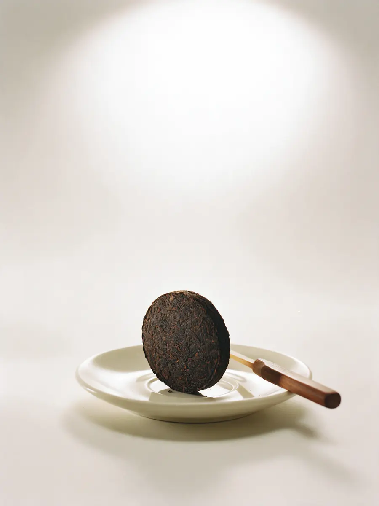
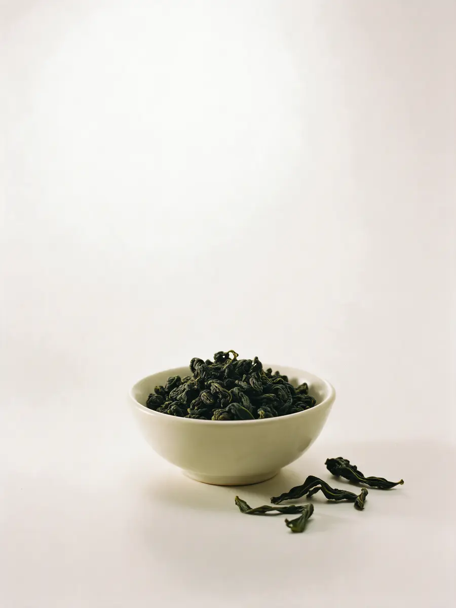
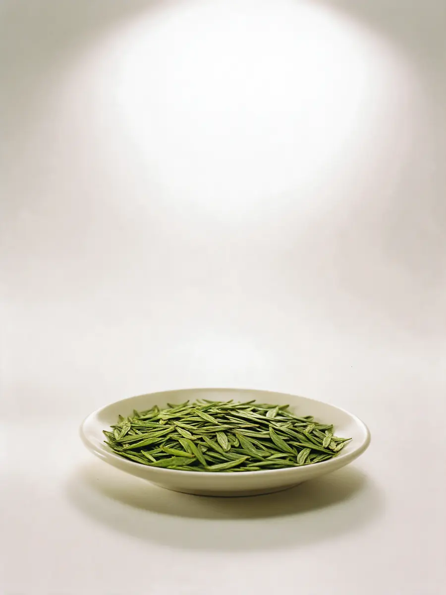
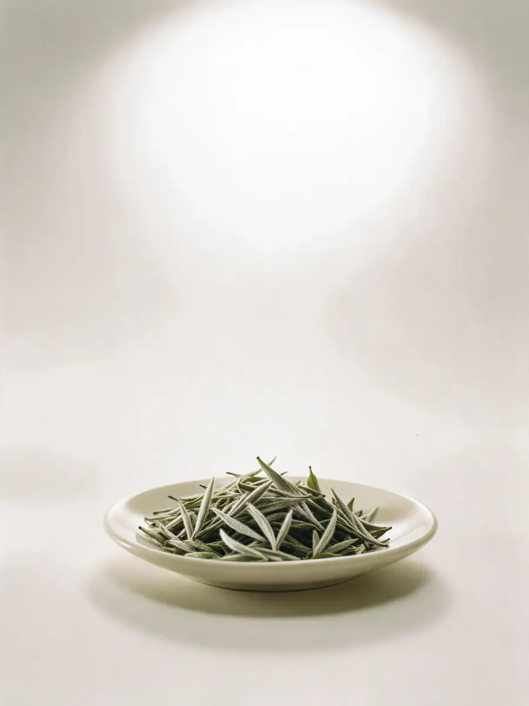
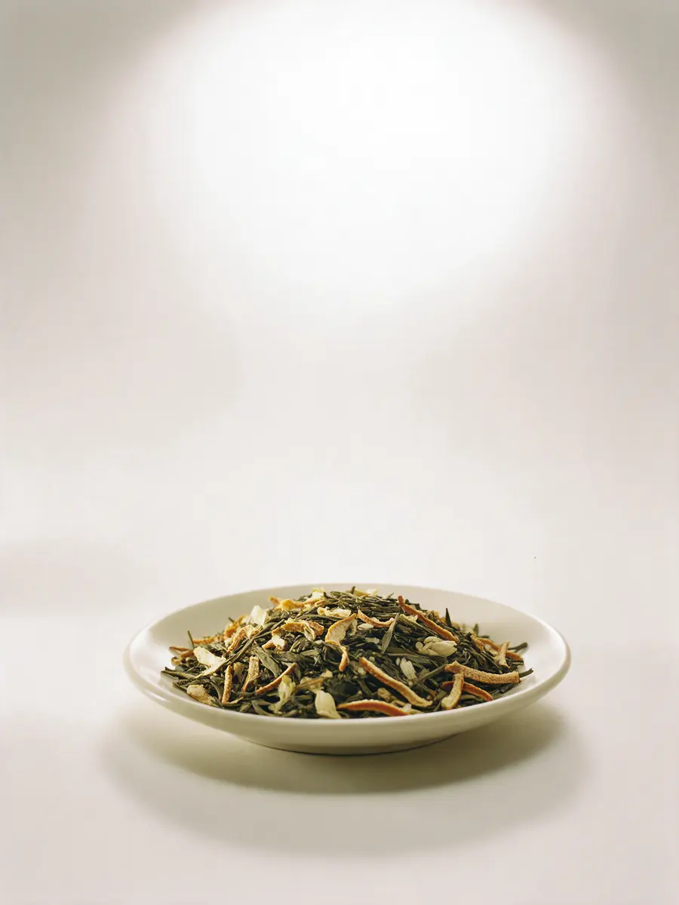
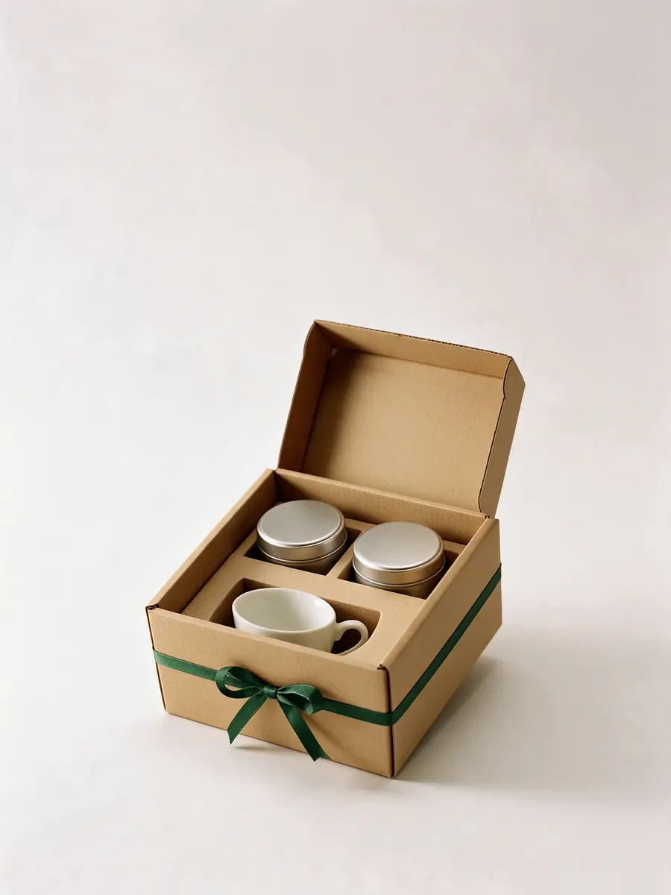

Пуэр
Шу пуэр «Гун Тин»
Плотный настой с нотами ореха и сухофруктов, мягкая сладость в послевкусии.
2 900 ₸100 гЗаказать

Около 50 сортов: пуэры, улуны, белый и зелёный чай, смеси и подарочные наборы. Поможем выбрать под вкус, заказ в один клик через мессенджер.
Мы не супермаркетная полка с пакетиками, а магазин, где чай выбирают, пробуют и рассказывают про него простыми словами.
Возим чай напрямую из Китая, без длинной цепочки посредников: в наличии свежий урожай и честная цена без наценок перекупщиков.
Привозим заказ по городу. Стоимость и время доставки называем сразу в чате, до оплаты, а не «посчитаем потом».
Не разбираетесь в сортах – напишите, что любите: крепкий, лёгкий, цветочный, с кофеином или без. Подберём два-три варианта и объясним разницу.
Соберём набор под повод и упакуем так, что не стыдно вручить. Открытка с вашим текстом – внутрь, слово в слово.
Чай лучше выбирать не по картинке, а по вкусу. Опишите, что пьёте сейчас, – предложим, что попробовать следующим.
Пуэры, улуны, белый и зелёный чай, смеси и подарочные наборы. У каждой позиции – описание вкуса, фасовка и цена. Кнопка «Заказать» откроет наш Telegram-канал – напишите название чая, ответим по наличию, цене и доставке.
Плотный настой с нотами ореха и сухофруктов, мягкая сладость в послевкусии.
Свежий, с цветочной горчинкой и долгим сладким послевкусием.
Сяо цин гань: пуэр, настоянный в кожуре зелёного мандарина, с цитрусовой свежестью.

Тёмный прожаренный улун: минеральный, с нотами какао и карамели.
Мягкий, с естественным сливочно-карамельным ароматом. Хорош тем, кто пробует улун впервые.

Знаменитый зелёный чай с плоским листом: свежий, с нотами молодой травы и ореха.

Серебряные иглы: только почки. Лёгкий, с ароматом меда и полевых цветов.

Классика: зелёный чай, настоянный на жасминовых цветах. Ароматный и мягкий.
Цветочный улун с медовым ароматом османтуса. Пьётся как десерт, без сахара.

Три вида пуэра в дегустационной фасовке и памятка по завариванию.
Свежий зелёный на утро и мягкий шу пуэр на вечер, в крафтовой коробке с лентой.
Два вида чая и фарфоровая гайвань – подарок, с которого начинают путь в чай.
Это часть ассортимента. Полный список – около 50 позиций с актуальными ценами и наличием – пришлём в чат по запросу.
День рождения, «спасибо», корпоративный подарок или «хочу познакомить с чаем». От повода зависят состав и упаковка.
Соберём из любых позиций каталога, фасовка – от дегустационной до полной. Состав и цену называем до подтверждения.
Крафтовая коробка с лентой, внутри – открытка с вашим текстом. Слово в слово, без наших правок.
Перед доставкой присылаем фото именно вашего набора. Едет то, что на фото.
Мы сами пьём то, что продаём, – поэтому про каждую позицию расскажем простыми словами: как заваривать, сколько проливов держит и с чем его пьют.
Фильтр по категориям, у каждой позиции – описание вкуса, фасовка и цена. Не определились – напишите нам, подберём вместе.
Откроется наш Telegram-канал – напишите, какой чай хотите. Подтвердим наличие, цену и время доставки.
Привозим заказ по городу. Стоимость и интервал доставки назовём в чате до оплаты – без сюрпризов.
Ответим наличием, ценой и временем доставки. Не разбираетесь в чае – тем более пишите: подберём под вкус и объясним простыми словами.
Опишите вкус, который нравится, или повод для подарка – предложим два-три варианта с ценой. Не любите писать – звоните.